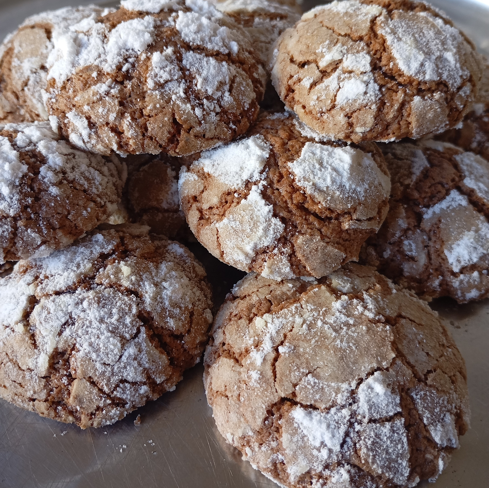

Galletitas Craqueladas de Chocolate

Ingredientes:
50g de manteca o margarina
100g de azúcar
120g de harina 0000
30g o dos cucharadas llenas de cacao amargo
1 huevo
1cucharadita de polvo de hornear 1 pizca de sal
Azucar impalpable para rebozar
Preparación:
En un recipiente batir la manteca con el azúcar.
Cuando se forme una pasta cremosa, agregar el huevo y batir.
Añadir el cacao y la pizaca de sal. Integrar todo.
Incorporar el harina con el polvo de hornear y mezclar todo sin amasar.
Tapar con film y llevar a la heladera por media hora.
Formar bolitas y pasarlas por azúcar impalpable.
Llevar al horno a180° por 15 minutos.
© 2024 Mi Blog de Cocina. Todos los derechos reservados.